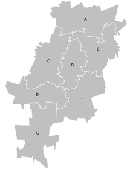

Upon the creation of the Metropolitan Municipality in 2000 the city was subdivided into eleven regions, simply named Region 1 to Region 11. These were reorganized in 2006 into the current seven regions named alphabetically Region A to Region G, as shown on the nearby map
As of 2006 the seven regions are:

-
Region A: Diepsloot, Kya Sand;
-
Region B: Randburg, Rosebank, Emmarentia,
-
Region C: Roodepoort, Constantia Kloof, Northgate;
-
Region D: Doornkop, Soweto, Dobsonville, Protea Glen;
-
Region E: Alexandra, Wynberg, Sandton;
-
Region F: Inner City;
-
Region G: Orange Farm, Ennerdale, Lenasia.
In the 2016 municipal elections, the ruling party, the ANC, lost their majority in Johannesburg for the first time since taking power in 1994, claiming only 44.12% of the vote. The Economic Freedom Fighters and Democratic Alliance both agreed to vote for the DA mayoral candidate, Herman Mashaba, who was sworn into power as the first Democratic Alliance mayor of Johannesburg on 22 August 2016. The ANC returned to the city's executive on 4 December 2019 following the election of its regional chair, Geoff Makhubo, to the mayoralty. Makhubo died on 9 July 2021 and Eunice Mgcina was appointed acting mayor. A new mayor, Jolidee Matongo, was elected unopposed on 10 August 2021. Matongo died in a car accident in September 2021 and Mpho Moerane was elected to succeed him
crime
After the Group Areas Act was scrapped in 1991, Johannesburg was affected by urban blight. Thousands of poor black people, who had been forbidden to live in the city proper, moved into the city from surrounding black townships like Soweto and many immigrants from economically beleaguered and war torn African nations flooded into South Africa. Many buildings were abandoned by landlords, especially in high-density areas, such as Hillbrow. Many corporations and institutions, including the stock exchange, moved their headquarters away from the city centre, to suburbs like Sandton.
Reviving the city centre is one of the main aims of the municipal government of Johannesburg. Drastic measures have been taken to reduce crime in the city. These measures include closed-circuit television on street corners. As of 11 December 2008, every street corner in Johannesburg central is under high-tech CCTV surveillance. The CCTV system, operated by the Johannesburg Metropolitan Police Department (JMPD), is also able to detect stolen or hijacked vehicles by scanning the number plates of every vehicle travelling through the central business district (CBD), then comparing them to the eNaTIS database. The JMPD claims that the average response time by police for crimes committed in the CBD is 60 seconds.
Crime levels in Johannesburg have dropped as the economy has stabilised and begun to grow. Between 2001 and 2006, R9-billion (US$1.2 billion) has been invested in the city centre. Further investment of around R10-billion (US$1.5 billion) is expected in the city centre alone by 2010. This excludes development directly associated with the 2010 FIFA World Cup. In an effort to prepare Johannesburg for the 2010 FIFA World Cup, local government enlisted the help of Rudy Giuliani, former Mayor of New York City, to help bring down the crime rate, as the opening and closing matches of the tournament were played in the city.
Murders in the Johannesburg municipality amounted to 1,697 in 2007 according to the South African Medical Research Council, a rate of 43 per 100,000 inhabitants. In 2016 that number had sharply declined to 29.4 per 100,000 inhabitants, placing the murder rate at more than half of that of Cape Town and even below the national average.